NPG Lite Flasher#
Ringkasan#
NPG Lite Flasher adalah aplikasi desktop open-source yang memungkinkan Anda untuk flash firmware ke Neuro PlayGround Lite, serta papan berbasis ESP32 lainnya menggunakan file biner. GUI yang dipoles (dan CLI) untuk mengunggah bundel firmware baru ke perangkat NPG Lite Anda (atau papan ESP32).
🖥️ UI Baru yang Elegan
Antarmuka yang didesain ulang untuk kejelasan
Langkah-langkah built-in untuk mengambil firmware dari GitHub
Dukungan unggahan firmware kustom
🔄 Integrasi Satu-Klik
Luncurkan Chords-Web atau Chords-Python langsung untuk visualisasi real-time
🧠 Manajemen Firmware yang Lebih Pintar
Auto-deteksi nama firmware duplikat
Menampilkan status unduhan langsung dengan tanda centang hijau
Auto-fill nama firmware dari metadata file
⚡ Alur Kerja Flashing yang Ditingkatkan
“Add & Flash” sekarang mendukung unggahan kustom dalam satu langkah yang mulus

NPG Lite Flasher#
Persyaratan Sistem#
Sistem Operasi: Windows 10+ / macOS 10.15+ / Linux (glibc 2.27+)
Persyaratan Perangkat Keras#
Neuro PlayGround Lite Board atau papan ESP32 lainnya.
USB type-C cable
Menyiapkan perangkat keras#
Mari kita mulai dengan menyiapkan papan NPG Lite atau ESP32 development board Anda.
Instalasi#
Unduh installer dari rilis terbaru: NPG Lite Flasher Release
Pilih installer untuk OS Anda:
Fedora →
.rpmDebian/Ubuntu →
.debmacOS →
.dmgWindows →
.msiAtau unduh source bundle untuk membangun sendiri
Jalankan installer untuk OS Anda:
Windows (.msi)
Klik dua kali file .msi yang diunduh.
Jika Anda melihat peringatan SmartScreen, klik More Info → Run Anyway.
Lanjutkan melalui wizard installer: Next → pilih lokasi instalasi → Install → Finish.
Fedora (.rpm)
Buka terminal dan jalankan:
sudo dnf install npg-lite-flasher-<version>.rpm
Masukkan kata sandi Anda dan konfirmasi instalasi saat diminta.
Setelah instalasi, luncurkan NPG Lite Flasher dari menu Applications Anda.
Debian/Ubuntu (.deb)
Buka terminal dan jalankan:
sudo apt install ./npg-lite-flasher_<version>_amd64.deb
Jika Anda menemukan dependensi yang hilang, jalankan:
sudo apt --fix-broken install
Luncurkan NPG Lite Flasher dari launcher desktop Anda atau via:
npg-lite-flasher
macOS (.dmg)
Klik dua kali file npg-lite-flasher.dmg yang diunduh.
Ketika Anda melihat peringatan macOS:
“npg-lite-flasher.dmg” diunduh dari Internet.
Apakah Anda yakin ingin membukanya?
klik **Open**
Seret NPG Lite Flasher.app ke folder Applications Anda.
Keluarkan image yang dipasang dan buka aplikasi dari Applications.
(Opsional) Bangun dari source
git clone https://github.com/upsidedownlabs/NPG-Lite-Flasher.git
cd NPG-Lite-Flasher
npm i
cargo tauri build
Mengunggah Firmware#
Anda dapat memilih dari beberapa opsi firmware tergantung pada bagaimana Anda berencana menggunakan NPG Lite - termasuk Bluetooth Low Energy (BLE), Serial, Wi-Fi, atau bahkan unggah firmware kustom Anda sendiri.
Buka NPG Lite Flasher.
Pilih tab
Bluetooth LE, di bagian atas jendela Anda akan melihat tab untuk setiap jenis firmware - klik pada Bluetooth LE untuk menampilkan antarmuka khusus BLE.
{kind=link}
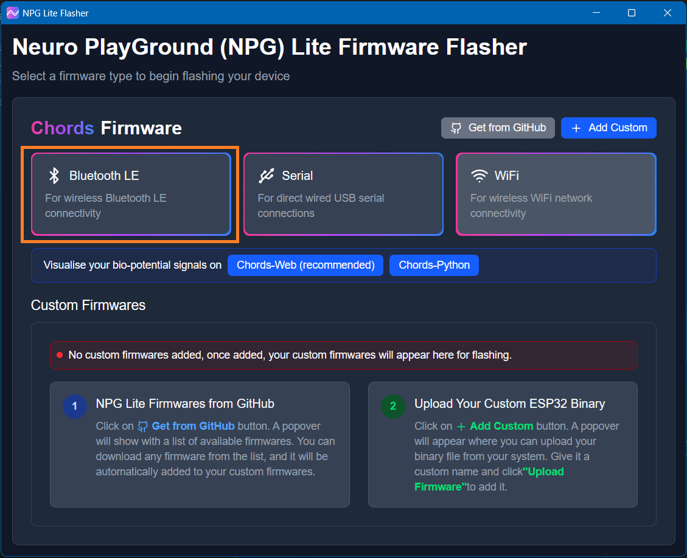
Bluetooth LE specific interface will appear.
{kind=link}
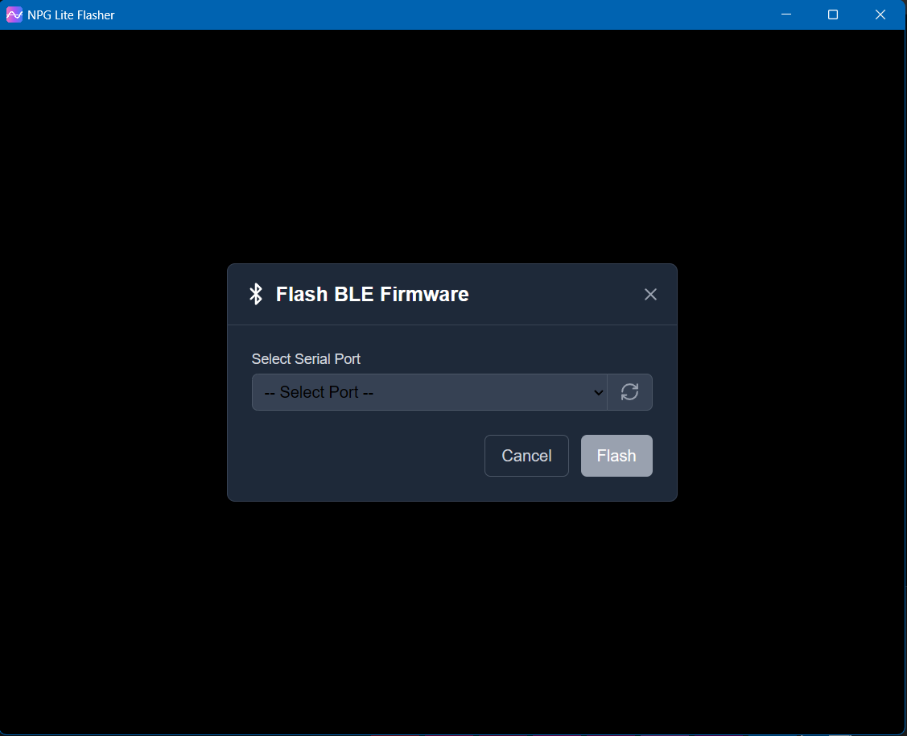
Hubungkan perangkat NPG Lite Anda via USB-C. Flasher harus mendeteksi port COM serial baru. Dari dropdown Port, pilih port yang sesuai dengan NPG Lite Anda.
{kind=link}
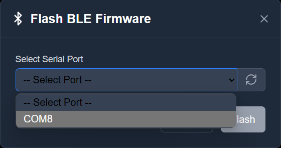
Klik
Flash, tombol Flash untuk mulai mengunggah firmware BLE.
{kind=link}
Tunggu konfirmasi, Anda akan melihat pesan “Success”. Ini menunjukkan bahwa firmware telah berhasil di-flash.
{kind=link}
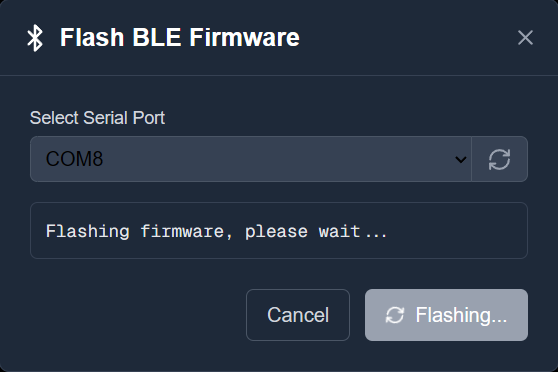
{kind=link}
Restart perangkat Anda, Cabut kabel USB, alihkan saklar power NPG Lite mati lalu nyala, dan papan Anda sekarang akan boot ke firmware Bluetooth LE baru.
Buka NPG Lite Flasher.
Pilih tab
Serial, di bagian atas jendela Anda akan melihat tab untuk setiap jenis firmware - klik pada Serial untuk menampilkan antarmuka khusus Serial.
{kind=link}
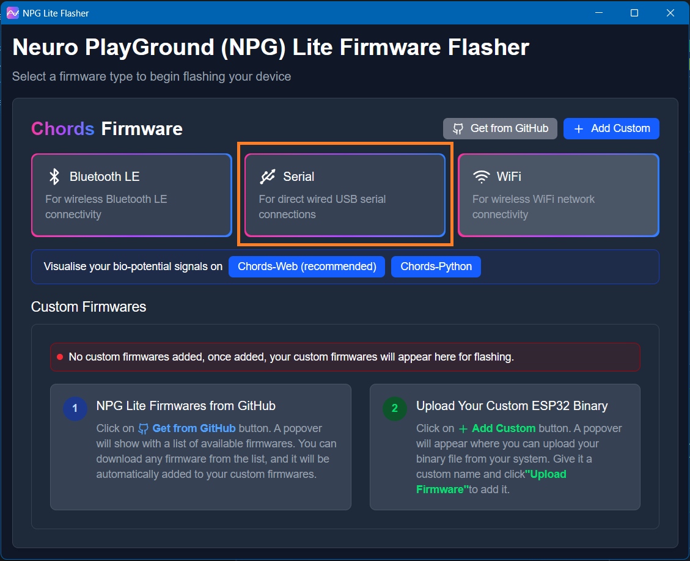
Antarmuka khusus Serial akan muncul.
{kind=link}
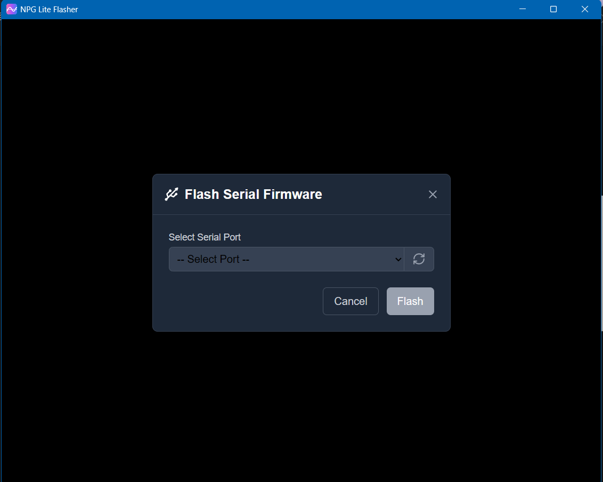
Hubungkan perangkat NPG Lite Anda via USB-C. Flasher harus mendeteksi port COM serial baru. Dari dropdown Port, pilih port yang sesuai dengan NPG Lite Anda.
Klik
Flash, tombol Flash untuk mulai mengunggah firmware Serial.
{kind=link}
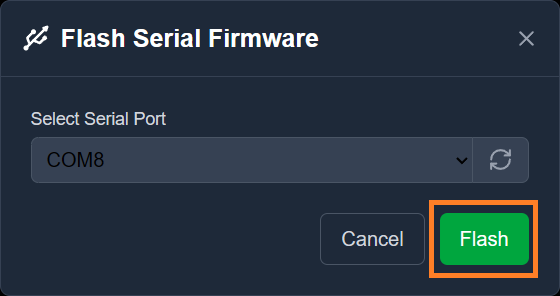
Tunggu konfirmasi, Anda akan melihat pesan “Success”. Ini menunjukkan bahwa firmware telah berhasil di-flash.
{kind=link}
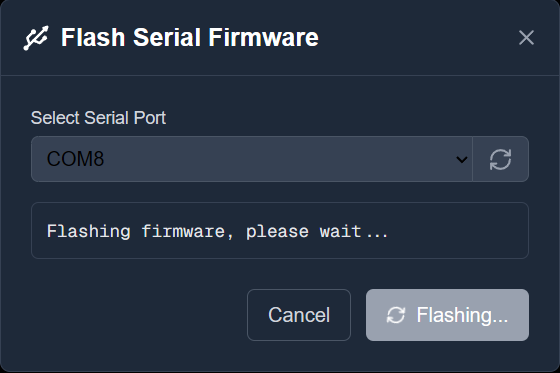
{kind=link}
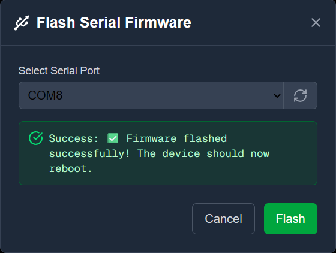
Restart perangkat Anda, Cabut kabel USB, alihkan saklar power NPG Lite mati lalu nyala, dan papan Anda sekarang akan boot ke firmware Serial baru.
Buka NPG Lite Flasher.
Pilih tab
WiFi, di bagian atas jendela Anda akan melihat tab untuk setiap jenis firmware - klik pada WiFi untuk menampilkan antarmuka khusus WiFi.
{kind=link}
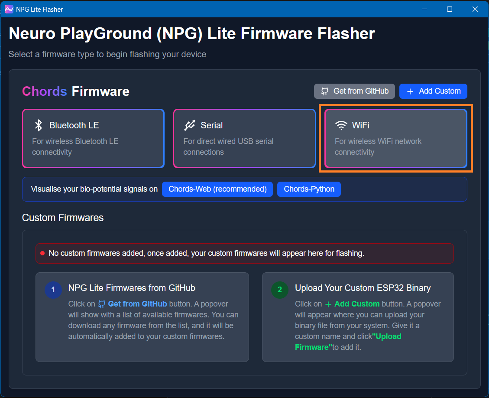
Antarmuka khusus WiFi akan muncul.
{kind=link}
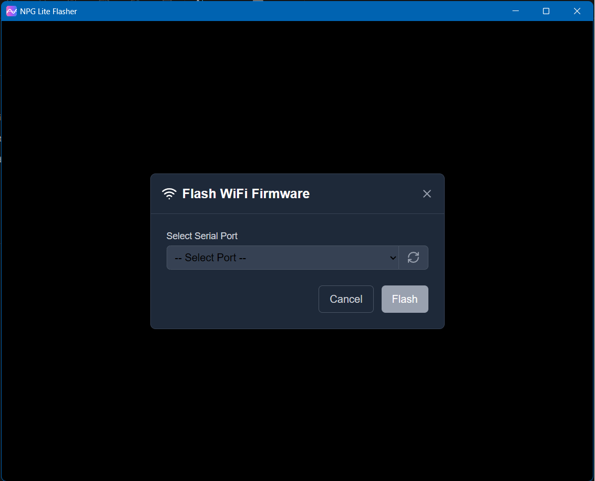
Hubungkan perangkat NPG Lite Anda via USB-C. Flasher harus mendeteksi port COM serial baru. Dari dropdown Port, pilih port yang sesuai dengan NPG Lite Anda.
Klik
Flash, tombol Flash untuk mulai mengunggah firmware WiFi.
{kind=link}
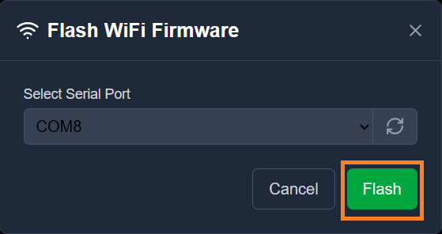
Tunggu konfirmasi, Anda akan melihat pesan “Success”. Ini menunjukkan bahwa firmware telah berhasil di-flash.
{kind=link}
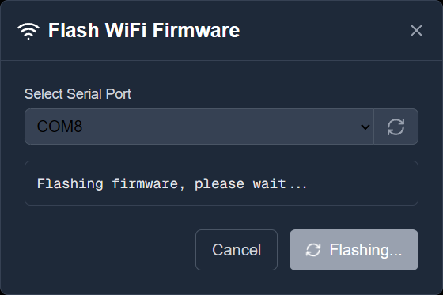
{kind=link}
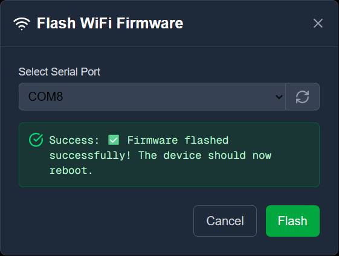
Restart perangkat Anda, Cabut kabel USB, alihkan saklar power NPG Lite mati lalu nyala, dan papan Anda sekarang akan boot ke firmware WiFi baru.
Buka NPG Lite Flasher.
Pilih tab
+Add Custom, di bagian atas jendela untuk beralih ke mode firmware-kustom.
{kind=link}
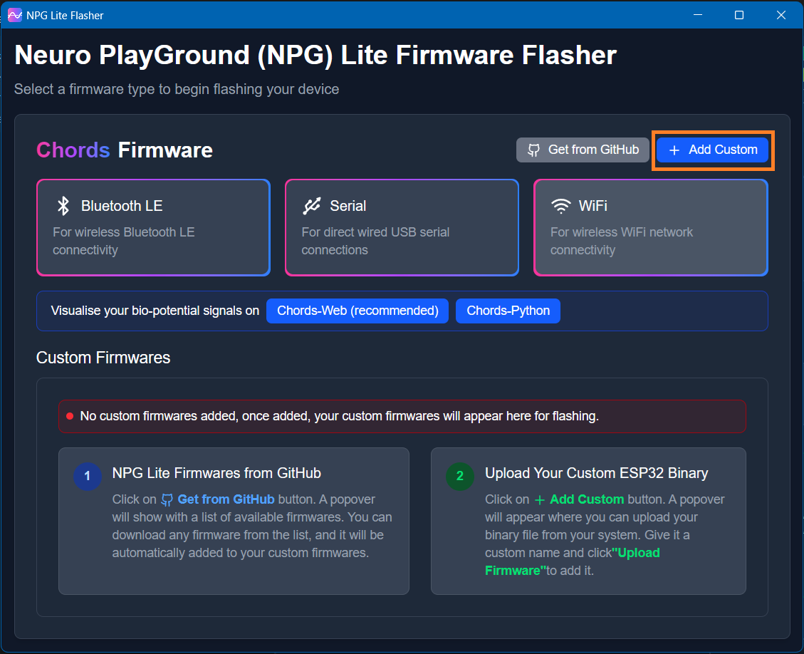
Antarmuka khusus
+ Add Customakan muncul.
{kind=link}
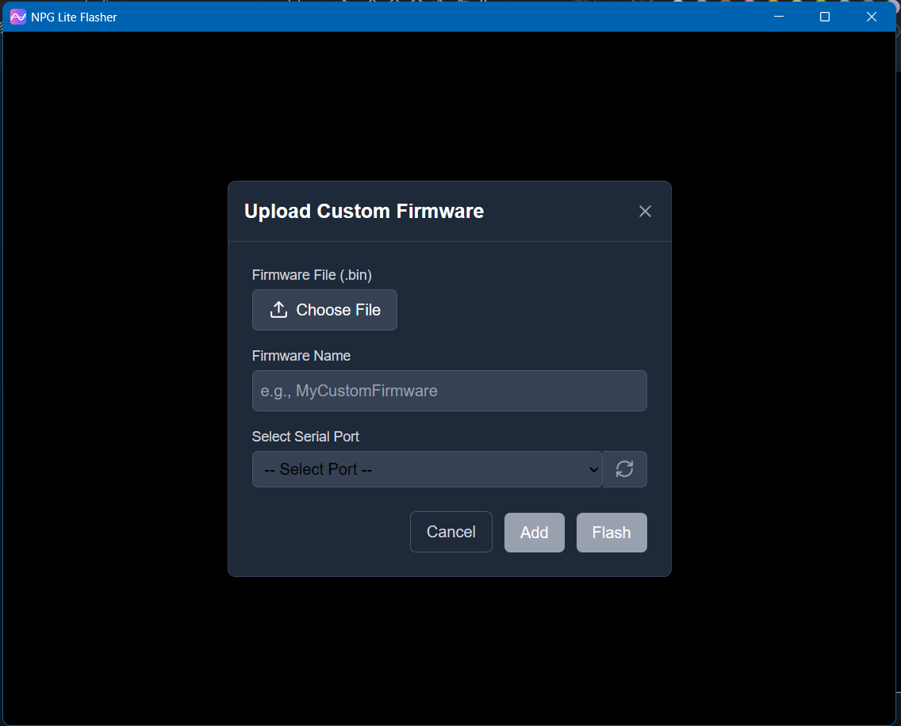
Tambahkan file firmware Anda: Klik tombol
Choose Fileuntuk menemukan firmware Anda dan pilih file .bin yang dikompilasi.Setelah diimpor Anda akan melihat nama file firmware Anda di Firmware Name.
Hubungkan perangkat NPG Lite Anda via USB-C. Flasher harus mendeteksi port COM serial baru. Dari dropdown Port, pilih port yang sesuai dengan NPG Lite Anda.
{kind=link}
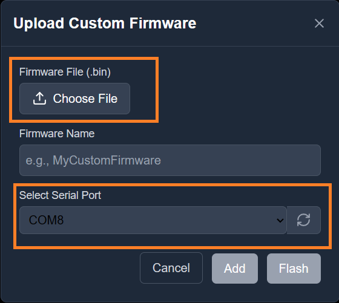
Klik
Flash, tombol Flash untuk mulai mengunggah firmware Custom.
{kind=link}
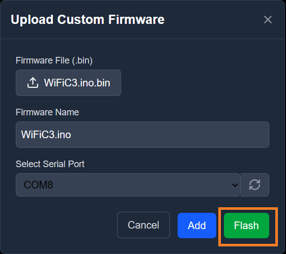
Tunggu konfirmasi, Anda akan melihat pesan “Success”. Ini menunjukkan bahwa firmware telah berhasil di-flash.
{kind=link}
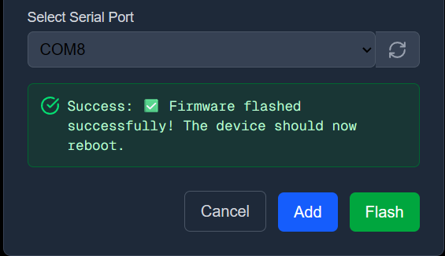
Restart perangkat Anda, Cabut kabel USB, alihkan saklar power NPG Lite mati lalu nyala, dan papan Anda sekarang akan boot ke firmware Custom baru.
Klik
Add, ini akan menambahkan firmware di daftar +Add Custom untuk flash di masa depan - sehingga Anda dapat melewati langkah pemilihan file lain kali.
{kind=link}
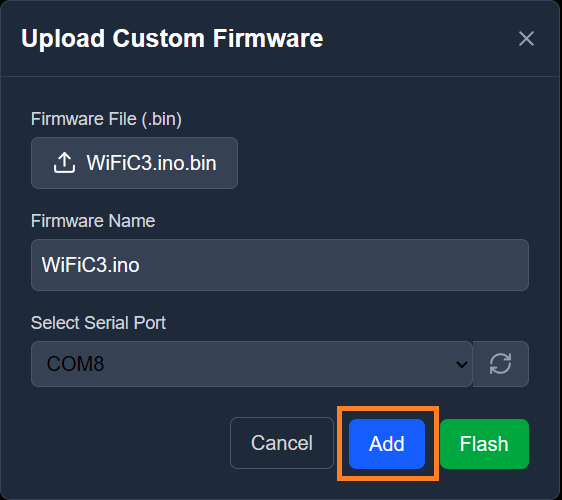
{kind=link}
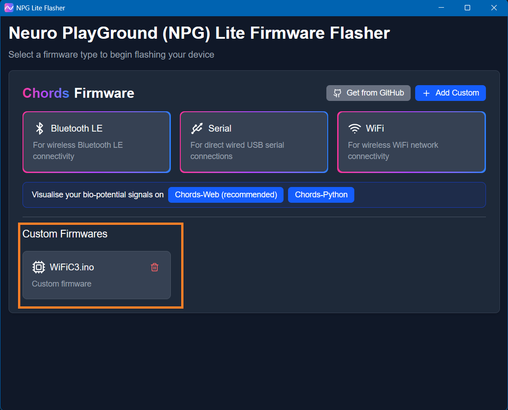
{kind=link}
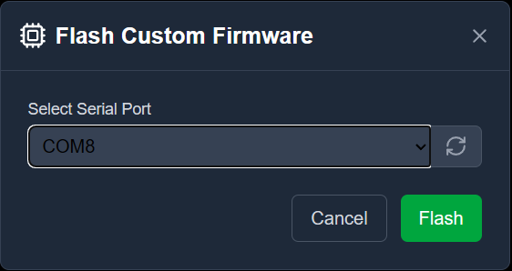
Buka NPG Lite Flasher.
Pilih tab
Get From GitHub, di bagian atas jendela untuk memilih firmware yang dirancang oleh Upside Down Labs untuk perangkat NPG Lite dan ESP32.
{kind=link}
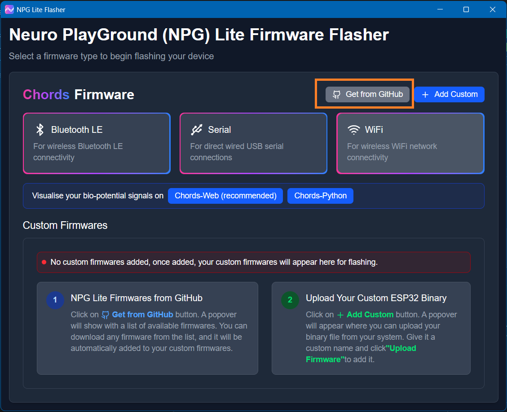
Daftar firmware akan muncul. Anda dapat mengunduh beberapa firmware secara simultan, tetapi hanya satu yang dapat di-flash pada satu waktu.
{kind=link}
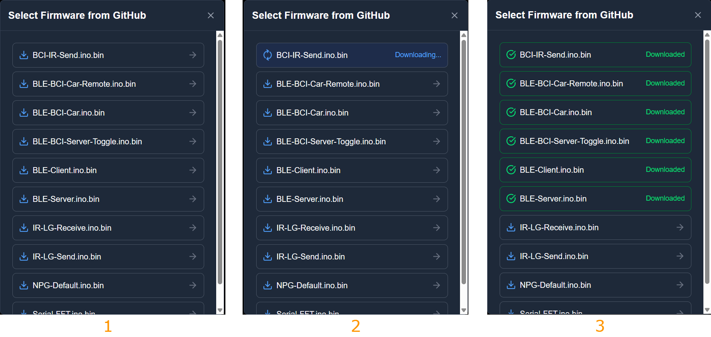
Setelah diunduh, layar
Flash Custom Firmwareakan muncul, klikFlashuntuk flash firmware ke perangkat Anda. Pastikan perangkat NPG Lite Anda terhubung via USB-C. Flasher akan mendeteksi port COM serial secara otomatis. Anda juga dapat memilih port COM dari dropdown Port, sesuai dengan perangkat Anda.
{kind=link}
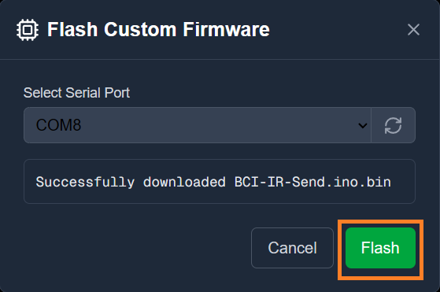
Tunggu konfirmasi, Anda akan melihat pesan “Success”. Ini menunjukkan bahwa firmware telah berhasil di-flash.
{kind=link}
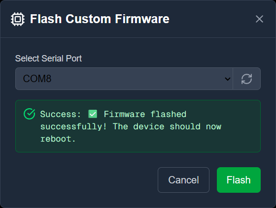
Restart perangkat Anda, Cabut kabel USB, alihkan saklar power NPG Lite mati lalu nyala, dan papan Anda sekarang akan boot ke firmware baru.
Periksa tab
Custom Firmwaresuntuk flash di masa depan; ini menghemat Anda dari mengunduh file firmware yang sama lagi.
{kind=link}
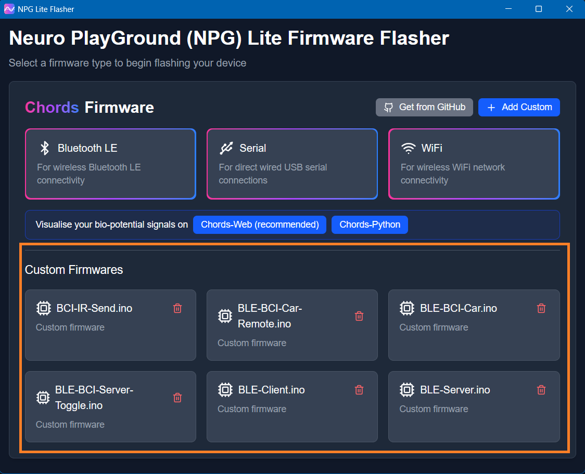
Pemecahan Masalah
Perangkat tidak ditemukan:
Verifikasi kabel USB-C dan saklar power
Instal driver USB-serial yang sesuai
Kesalahan izin (macOS/Linux):
Jalankan dengan sudo atau tambahkan pengguna Anda ke grup dialout
Peringatan SmartScreen (Windows):
Gunakan More Info → Run Anyway seperti yang dijelaskan di atas
Visualisasi Real-Time#
Setelah flashing, visualisasikan sinyal biopotensial Anda dengan Chords-Web atau Chords-Python:
Di flasher, klik Buka
Chords-WebatauChords-Pythonsesuai preferensi Anda (di bawah “Visualize”).
{kind=link}
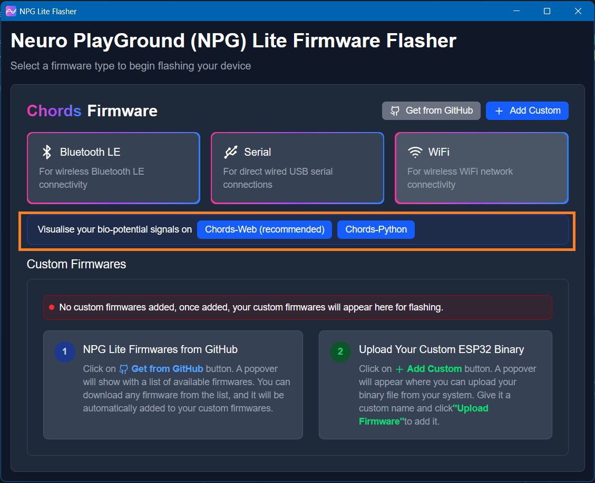
Untuk
Chords-Webtab browser terbuka keChords-Web.Klik
Connect → pilih NPG Lite Anda → mulai streaming.Untuk
Chords-Pythonikuti dokumentasi Chords Python .
Gunakan UI untuk:#
Pilih 1–3 channel untuk dilihat
Play/Pause stream langsung
Terapkan filter bandpass atau notch 50/60 Hz
Rekam dan ekspor data ke CSV
Repositori GitHub#
Untuk kode sumber lengkap, pelacakan masalah, dan panduan kontribusi, kunjungi repo GitHub NPG Lite Flasher.
Anda akan menemukan panduan setup dan dapat melacak pengembangan berkelanjutan - termasuk perbaikan bug dan peningkatan fitur: NPG Lite Flasher GitHub